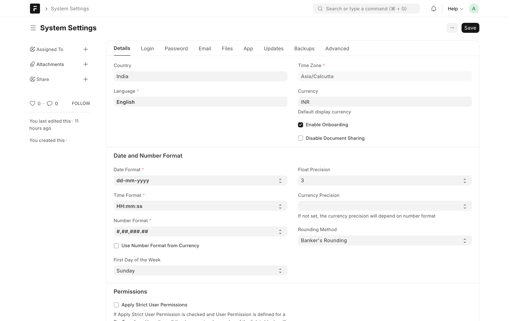
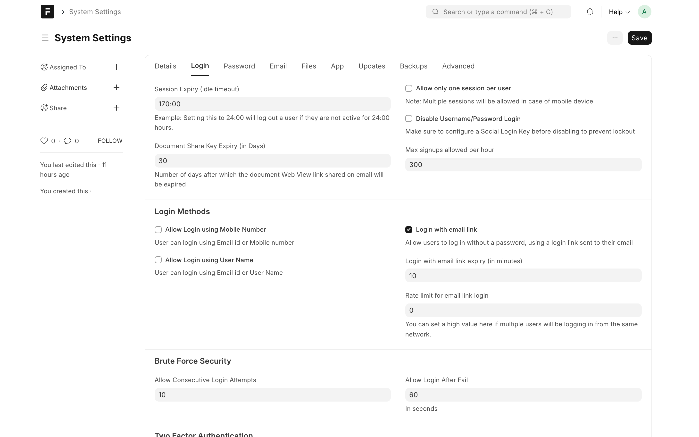

System Settings
System Settings is the Single DocType with the site-wide settings: regional formats, login, passwords, email, files, backups and background jobs. Open it at /app/system-settings. Only the System Manager role can read and write it. Changes apply to all users after you save. Users see desk changes after they reload the page. For how Single DocTypes, caching and boot data work, see How Settings Work.

The form has nine tabs: Details, Login, Password, Email, Files, App, Updates, Backups and Advanced. The tables below list every field. "Default" is the default in the DocType JSON. A field with no default in the JSON shows "none". The setup wizard sets some of these values. See Values set by the setup wizard.
Most fields are read on the server with frappe.get_system_settings("<fieldname>"). Desk code reads frappe.boot.sysdefaults through frappe.defaults.get_default() or frappe.defaults.is_enabled().
Details
Details (first section)
| Field |
Default |
Effect |
Application Name (app_name) |
Frappe |
Hidden. Fallback when App Name in Website Settings is empty. Used for the login page title, the desk page title and the subject of the login link email (frappe/www/login.py, frappe/www/app.py). |
Country (country) |
none |
Desk loads regional/<country>.js and regional/<country>_list.js of each DocType (frappe/desk/form/meta.py). Workspace links with a country show only for this country (frappe/desk/desktop.py). Default country of the Phone control (frappe/public/js/frappe/form/controls/phone.js, fallback India). Used to shorten numbers on chart axes (frappe/public/js/frappe/utils/utils.js). The Country document is sent in the boot data. |
Language (language) |
none |
Required. On save, it is set as the global default lang. Users with no language on their User record use it (frappe/translate.py). If it changes, the form reloads the page. |
Time Zone (time_zone) |
none |
Required and read only in the form. The setup wizard sets it. Server dates and times use it (frappe.utils.get_system_timezone, fallback Asia/Kolkata). Sent to the desk as frappe.boot.time_zone.system. A user can set a different time zone on the User record. |
Currency (currency) |
none |
Default display currency for Currency fields with no currency (frappe/utils/formatters.py, frappe/public/js/frappe/utils/number_format.js, frappe/public/js/frappe/model/meta.js with fallback USD). |
Enable Onboarding (enable_onboarding) |
0 |
Shows module onboarding blocks in workspaces (frappe/desk/desktop.py) and form tours (frappe/desk/doctype/form_tour/form_tour.py). The setup wizard sets it to 1. |
Setup Complete (setup_complete) |
0 |
Hidden and read only. Frappe writes it from Installed Application after the setup wizard (frappe/desk/page/setup_wizard/setup_wizard.py). The desk uses frappe.is_setup_complete() instead of this field. |
Disable Document Sharing (disable_document_sharing) |
0 |
Denies the share permission (frappe/permissions.py). The desk hides Share for all users except Administrator (frappe/public/js/frappe/model/model.js). Assigning a document to a user without permission fails, because Frappe cannot share it (frappe/desk/form/assign_to.py). |
| Field |
Default |
Effect |
Date Format (date_format) |
none |
Required. Options: yyyy-mm-dd, dd-mm-yyyy, dd/mm/yyyy, dd.mm.yyyy, mm/dd/yyyy, mm-dd-yyyy. Used to show and parse dates on the server (frappe/utils/data.py) and in the desk (frappe/public/js/frappe/utils/datetime.js). Also used for date cells in Excel exports (frappe/utils/xlsxutils.py). |
Time Format (time_format) |
HH:mm:ss |
Required. HH:mm:ss or HH:mm. Used for Time and Datetime fields on the server and in the desk. |
Number Format (number_format) |
none |
Required. For example #,###.##, #.###,## or #,##,###.##. Sets the group and decimal separators (frappe/model/meta.py, frappe/public/js/frappe/utils/number_format.js). |
Use Number Format from Currency (use_number_format_from_currency) |
0 |
Uses the Number Format of the Currency record for currency values, if it has one. Read on the server in frappe/model/meta.py and in the desk in number_format.js. |
First Day of the Week (first_day_of_the_week) |
Sunday |
First day in the date picker and calendars (frappe/public/js/frappe/utils/datetime.js). On the server, frappe.utils.get_first_day_of_the_week() returns it. |
Float Precision (float_precision) |
none |
Decimal places for number fields, other than Currency, with no precision. Fallback is 3 (frappe/model/meta.py, frappe/public/js/frappe/model/meta.js). |
Currency Precision (currency_precision) |
none |
Decimal places for Currency fields with no precision. If empty, the precision comes from the number format (frappe/model/meta.py, frappe/utils/data.py). |
Rounding Method (rounding_method) |
Banker's Rounding (legacy) |
Banker's Rounding (legacy), Banker's Rounding or Commercial Rounding. Used by frappe.utils.rounded() and flt() on the server and by number_format.js in the desk. The form asks you to confirm a change. After you move away from the legacy option, the form hides it. If the value changes, the form reloads the page. |
Permissions
| Field |
Default |
Effect |
Apply Strict User Permissions (apply_strict_user_permissions) |
0 |
When a user has a User Permission for a DocType, documents with an empty link field to that DocType are hidden. When off, they are shown. Read in frappe/permissions.py, frappe/model/db_query.py, frappe/model/mapper.py and frappe/core/doctype/file/file.py. See User Permissions. |
Login

Login (first section)
| Field |
Default |
Effect |
Session Expiry (idle timeout) (session_expiry) |
170:00 |
Idle time in hh:mm before a session ends. The controller rejects other formats. The server reads the global default. If it is empty, the server uses 240:00:00 (frappe/sessions.py). |
Document Share Key Expiry (in Days) (document_share_key_expiry) |
30 |
Days until a new Document Share Key expires. These keys are used in web view links in emails. If 0, the server uses 90 (frappe/core/doctype/document_share_key/document_share_key.py). |
Allow only one session per user (deny_multiple_sessions) |
0 |
At login, Frappe ends the other sessions of the user (frappe/auth.py). The site config key deny_multiple_sessions does the same. |
Disable Username/Password Login (disable_user_pass_login) |
0 |
/api/method/login with a password fails, and the login page hides the password form (frappe/auth.py, frappe/www/login.html). The controller requires an enabled Social Login Key, enabled LDAP or Login with email link first. |
Max signups allowed per hour (max_signups_allowed_per_hour) |
300 |
Website sign-up stops for the hour after this number of new users (frappe/core/doctype/user/user.py). |
Login Methods
| Field |
Default |
Effect |
Allow Login using Mobile Number (allow_login_using_mobile_number) |
0 |
Users can log in with the Mobile No of their User record. The login page label shows "Mobile" (frappe/www/login.py, frappe/core/doctype/user/user.py). |
Allow Login using User Name (allow_login_using_user_name) |
0 |
Users can log in with their Username. The login page label shows "Username". |
Login with email link (login_with_email_link) |
1 |
Shows the login link option on the login page. frappe.www.login.send_login_link sends a one-time login link by email. |
Login with email link expiry (in minutes) (login_with_email_link_expiry) |
10 |
Shows when Login with email link is on. Minutes until the link expires. If 0, the server uses 10. |
Rate limit for email link login (rate_limit_email_link_login) |
none |
Shows when Login with email link is on. Maximum login link requests per hour. If empty or 0, the server uses 5 (frappe/www/login.py). |
Brute Force Security
| Field |
Default |
Effect |
Allow Consecutive Login Attempts (allow_consecutive_login_attempts) |
10 |
Failed logins before Frappe locks the account. 0 turns off the lock (frappe/auth.py). |
Allow Login After Fail (allow_login_after_fail) |
60 |
Seconds the account stays locked. |
Two Factor Authentication
| Field |
Default |
Effect |
Enable Two Factor Auth (enable_two_factor_auth) |
0 |
Turns on two-factor authentication (frappe/twofactor.py). When you turn it on, the controller sets Two Factor Authentication on the role All. With method SMS, the controller requires SMS Gateway URL in SMS Settings. When you turn it off, the controller clears the two bypass fields below. |
Bypass Two Factor Auth for users who login from restricted IP Address (bypass_2fa_for_retricted_ip_users) |
0 |
Shows when two-factor is on. Users who log in from an IP in their Restrict IP list skip two-factor. |
Bypass restricted IP Address check If Two Factor Auth Enabled (bypass_restrict_ip_check_if_2fa_enabled) |
0 |
Shows when two-factor is on. All users can log in from any IP. Each user can also have this flag on the User record (frappe/auth.py). |
Two Factor Authentication method (two_factor_method) |
OTP App |
Shows when two-factor is on. OTP App, SMS or Email. |
Expiry time of QR Code Image Page (lifespan_qrcode_image) |
none |
Shows when the method is OTP App. Seconds that the /qrcode page link with the OTP setup QR code stays valid. Also used to delete old QR code images in the hourly_maintenance job frappe.twofactor.delete_all_barcodes_for_users. If empty, the server uses 240. |
OTP Issuer Name (otp_issuer_name) |
Frappe Framework |
Shows when two-factor is on. Name shown in the authenticator app and in OTP emails. |
OTP SMS Template (otp_sms_template) |
none |
Shows when the method is SMS. Jinja text of the OTP SMS. It must contain {{ otp }}. If empty, Frappe sends "Your verification code is {{otp}}". |
Password
| Field |
Default |
Effect |
Logout All Sessions on Password Reset (logout_on_password_reset) |
1 |
Ends all sessions of a user after a password change or OTP secret reset (frappe/core/doctype/user/user.py, frappe/twofactor.py). |
Force User to Reset Password (force_user_to_reset_password) |
none |
Days. At login, users whose last password reset is older than this must reset the password. Standard users are excluded (frappe/auth.py). When you first set it, Frappe sets Last Password Reset Date to today on users that have none. |
Reset Password Link Expiry Duration (reset_password_link_expiry_duration) |
1200 |
Duration in seconds. A reset link older than this fails. 0 means no expiry (frappe/core/doctype/user/user.py). |
Password Reset Link Generation Limit (password_reset_limit) |
3 |
Calls of frappe.core.doctype.user.user.reset_password allowed per hour (frappe/utils/password.py). |
Enable Password Policy (enable_password_policy) |
1 |
Checks password strength with zxcvbn (frappe/core/doctype/user/user.py, frappe/utils/password_strength.py). When off, the controller clears Minimum Password Score. |
Minimum Password Score (minimum_password_score) |
2 |
Shows when the policy is on. Score 2, 3 or 4 that a new password must reach. The controller requires a value when the policy is on. |
Email
| Field |
Default |
Effect |
Email Footer Address (email_footer_address) |
none |
Organization name and address in the footer of outgoing emails. Read as a global default in frappe/email/email_body.py. |
Email Retry Limit (email_retry_limit) |
3 |
Send attempts before an Email Queue record is set to Error (frappe/email/doctype/email_queue/email_queue.py). If 0, the server uses 3. |
Disable Standard Email Footer (disable_standard_email_footer) |
0 |
Removes the footer from the default_mail_footer hook. Read as a global default in frappe/email/email_body.py. |
Hide footer in auto email reports (hide_footer_in_auto_email_reports) |
0 |
Removes the footer from Auto Email Report emails (frappe/templates/emails/auto_email_report.html). |
Include Web View Link in Email (attach_view_link) |
1 |
Adds a web view link of the document to emails sent with a print format (frappe/core/doctype/communication/mixins.py). |
Store Attached PDF Document (store_attached_pdf_document) |
1 |
Saves the print format PDF attached to an email as a private File on the Communication (frappe/email/doctype/email_queue/email_queue.py). This uses storage. |
Welcome Email Template (welcome_email_template) |
none |
Email Template for the welcome email to new users (frappe/core/doctype/user/user.py). |
Reset Password Template (reset_password_template) |
none |
Email Template for the password reset email. |
Files
| Field |
Default |
Effect |
Max File Size (MB) (max_file_size) |
none |
Upload size limit. If empty, Frappe uses max_file_size in site config (bytes), then 25 MB (frappe/core/api/file.py). Sent as frappe.boot.max_file_size. |
Max Zip Extract Size (MB) (max_zip_extract_size) |
none |
Maximum total size of the files in an extracted ZIP. Fallback is max_zip_extract_size in site config, then 25 MB. |
Allow Guests to Upload Files (allow_guests_to_upload_files) |
0 |
Lets Guest call frappe.handler.upload_file, for example from a web form. |
Force Web Capture Mode for Uploads (force_web_capture_mode_for_uploads) |
0 |
The camera dialog uses the web capture mode also on mobile devices (frappe/public/js/frappe/ui/capture.js). |
Strip EXIF tags from uploaded images (strip_exif_metadata_from_uploaded_images) |
1 |
Removes EXIF data from uploaded JPEG images (frappe/core/doctype/file/file.py). |
Delete Background Exported Reports After (Hours) (delete_background_exported_reports_after) |
48 |
Hours to keep report files exported in the background and sent by email. The hourly_maintenance job frappe.desk.utils.delete_old_exported_report_files deletes older files. |
Allowed File Extensions (allowed_file_extensions) |
none |
One extension per line. Empty allows all. The controller saves them in upper case. The server checks uploads in a request (frappe/core/doctype/file/file.py). The uploader limits the file picker (frappe/public/js/frappe/file_uploader/file_uploader.bundle.js). |
Allowed Doctypes for Guest Uploads (allowed_doctypes_for_guest_uploads) |
none |
Shows when guest uploads are on. One DocType per line. If set, guests can upload only for these DocTypes (frappe/handler.py). |
App
| Field |
Default |
Effect |
Default App (default_app) |
none |
The app that opens after login. Options are the installed apps. The Default App of a User overrides it (frappe/apps.py). |
Updates
| Field |
Default |
Effect |
Disable System Update Notification (disable_system_update_notification) |
0 |
Stops the weekly update check and the update popup for System Managers (frappe/utils/change_log.py). |
Disable Change Log Notification (disable_change_log_notification) |
0 |
Stops the "Updated To A New Version" dialog after an update (frappe/public/js/frappe/desk.js). |
Backups
| Field |
Default |
Effect |
Number of Backups (backup_limit) |
3 |
Backups that the Download Backups page lists and keeps. The hourly_maintenance job delete_downloadable_backups deletes older ones (frappe/desk/page/backups/backups.py). The controller sets values below 1 to 1. |
Encrypt Backups (encrypt_backup) |
0 |
Encrypts new backups and adds -enc to the file names (frappe/utils/backups.py). See Backups. |
Advanced
Reports
| Field |
Default |
Effect |
Max auto email report per user (max_auto_email_report_per_user) |
20 |
Enabled Auto Email Report records per user. The site config key max_reports_per_user overrides it (frappe/email/doctype/auto_email_report/auto_email_report.py). |
Max Report Rows (max_report_rows) |
100000 |
If a query or script report returns more rows, the browser does not show them and asks the user to export (frappe/public/js/frappe/views/reports/query_report.js). |
Snapshot Reports
| Field |
Default |
Effect |
Enable Snapshot Reports (enable_snapshot_reports) |
0 |
When it or Frequency changes, the controller deletes and creates the DuckDB Sync scheduled job (frappe.database.duckdb.database.start_duckdb_sync). |
Sync In Batches (sync_in_batch) |
1 |
Shows when snapshot reports are on. On: the sync uses pyarrow. Off: it uses the DuckDB extension (frappe/core/doctype/duckdb_sync/duckdb_sync.py). |
Frequency (frequency) |
Weekly |
Shows when snapshot reports are on. Daily runs at 00:00 each day. Weekly runs at 00:00 on Sunday. |
Sync Timeout (Seconds) (sync_timeout) |
none |
Shows when snapshot reports are on. Timeout of the sync jobs. If empty, the server uses 1500 seconds. |
Background Workers
| Field |
Default |
Effect |
Enable Scheduled Jobs (enable_scheduler) |
0 |
Hidden. If off, the scheduler does not enqueue scheduled jobs (frappe/utils/scheduler.py). The setup wizard sets it to 1. Use bench --site <site> enable-scheduler or disable-scheduler. If disable_scheduler is set in site config, the scheduler does not run, whatever this value is. |
Run Jobs only Daily if Inactive For (Days) (dormant_days) |
4 |
On Frappe Cloud, scheduled jobs run only once a day on sites with no activity for this many days. 0 turns this off. Not used on other hosts or in developer mode (frappe/utils/scheduler.py). |
Telemetry
| Field |
Default |
Effect |
Show Full Error and Allow Reporting of Issues to the Developer (allow_error_traceback) |
1 |
System users get the full traceback in error responses (frappe/utils/response.py). Website users never get it. |
Allow Sending Usage Data for Improving Applications (enable_telemetry) |
1 |
Turns on usage telemetry and the Sentry error DSN (frappe/utils/sentry.py, frappe/utils/telemetry/pulse/client.py). Telemetry is also off in developer mode. The setup wizard sets it from the user's choice. |
Search
| Field |
Default |
Effect |
Link Field Results Limit (link_field_results_limit) |
10 |
Results in the Link field dropdown (frappe/public/js/frappe/form/controls/link.js). The controller sets an empty value to 10 and limits it to 50. |
Show Absolute Datetime in Timeline (show_absolute_datetime_in_timeline) |
0 |
Not read by Frappe code in version 15. |
API Logging
| Field |
Default |
Effect |
Log API Requests (log_api_requests) |
0 |
Not read by Frappe code in version 15. Version 15 has no API Request Log DocType. |
Values set by the setup wizard
The setup wizard saves float_precision 3, rounding_method Banker's Rounding, enable_scheduler 1, backup_limit 3, enable_telemetry, and the country, language, time zone, currency and number format that the user selects. Date and time formats come from the Country record. If the wizard gets no country, it does not change System Settings. After the wizard, Frappe sets enable_onboarding and setup_complete with frappe.db.set_single_value.
For developers
frappe.get_system_settings("date_format") # cached
frappe.db.get_single_value("System Settings", "backup_limit") # cast to int
settings = frappe.get_single("System Settings")
settings.email_retry_limit = 5
settings.save()
frappe.get_system_settings(key) reads the document with frappe.get_cached_doc and keeps it on frappe.local for the request. frappe.db.get_system_setting(key) is the same function.validate checks the password score, session expiry format, two-factor and SMS setup, the username/password lockout, the backup limit, file extensions, the OTP SMS template and the link field limit. It also schedules snapshot reports.on_update saves each changed value as a global default (frappe.db.set_default), sets the default language, and deletes the system_settings and time_zone cache keys. A changed global default clears the full site cache, so the next boot of each user has the new values.- When the form loads,
frappe.core.doctype.system_settings.system_settings.load returns the time zone list and the global defaults of all Select and Data fields. The form shows these defaults in the fields.
- The desk reads most values from
frappe.boot.sysdefaults, which comes from the global defaults. frappe.db.set_single_value("System Settings", ...) does not update the global defaults, so the desk keeps the old value. Use doc.save() when the desk must see the change.
session_expiry, email_footer_address and disable_standard_email_footer are read as global defaults on the server. They also need doc.save().- Other boot keys from System Settings:
frappe.boot.time_zone and frappe.boot.max_file_size.
- To set values when your app is installed, use an
after_install hook and doc.save(). See How Settings Work.
Pitfalls
- Disable Username/Password Login fails unless a Social Login Key, LDAP or Login with email link is enabled. This prevents a lockout.
- Turning on Enable Two Factor Auth sets two-factor on the role
All. Turning it off does not clear the flag on the role.
enable_scheduler is 0 by default. If it is off, scheduled jobs, such as the email queue flush, do not run.- Changing Rounding Method on a site with data can change totals that Frappe calculates again.
- Time Zone is read only in the form. Set it in the setup wizard.